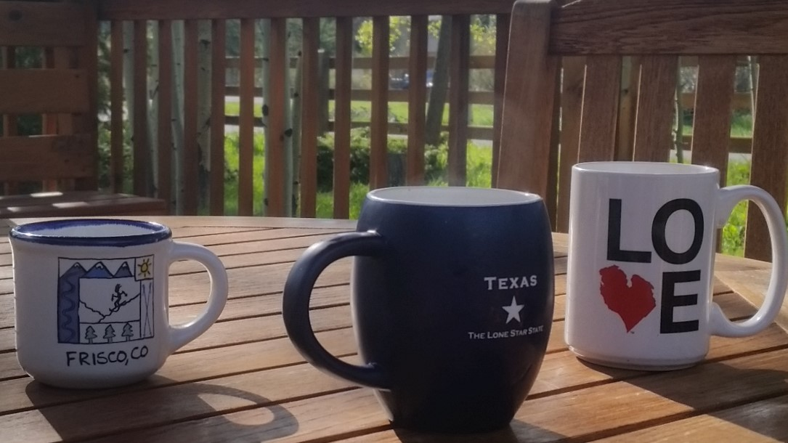
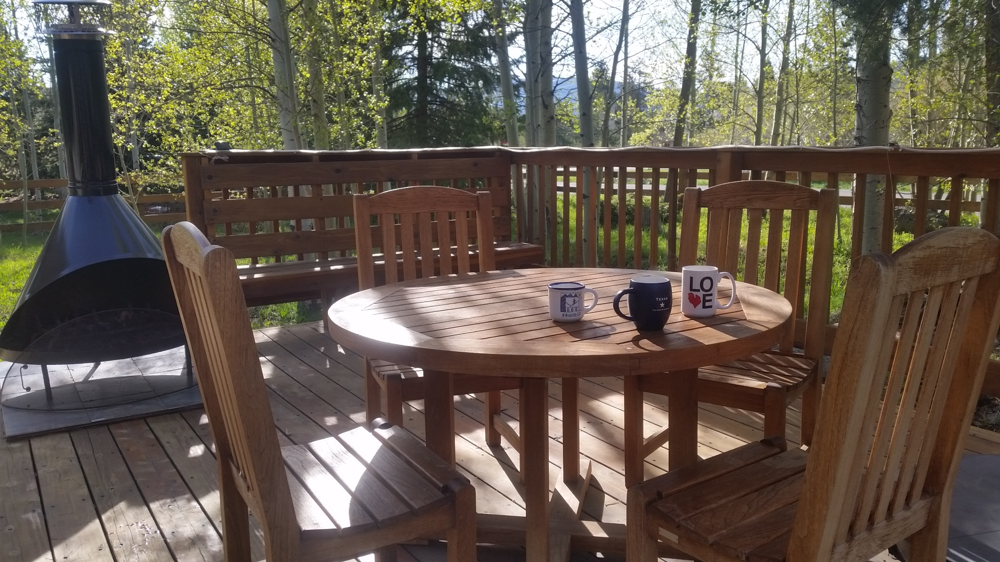
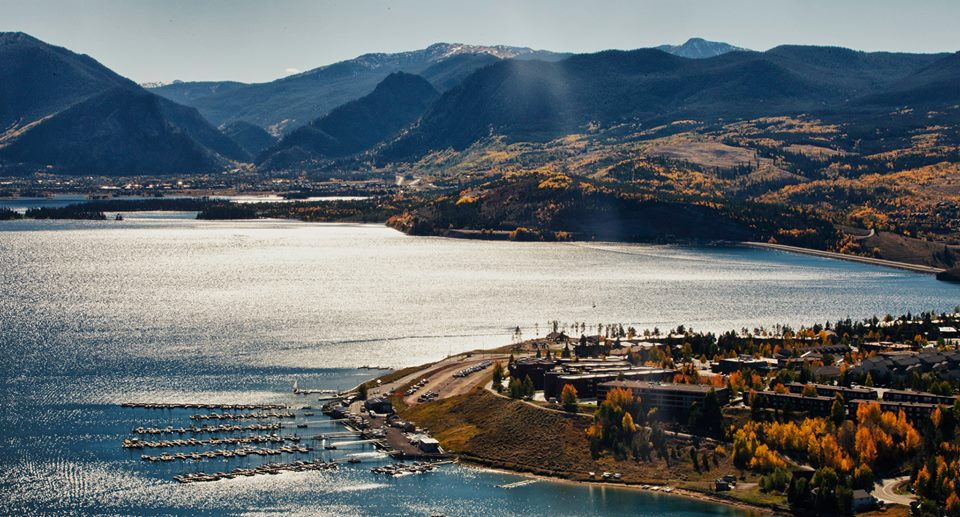

Summit County Sanctuary
Aspen Grove is the kind of place that immediately makes you forget where you came from and makes you want to put down aspen-like roots and never leave. Your sojourn temporarily ends here but your adventures are just beginning.
But first things first. Enjoy your morning cup while you listen to everyone's favorite Acapella group, your native Colorado songbirds. Or mingle with the locals and take a casual early morning stroll down to one of our favorite Frisco coffee shops!

Plan Your Visit
You can review the calendar and rates for Aspen Grove by visiting one of these two sites.
Request your dates and start to plan your escape! You can contact Dan at